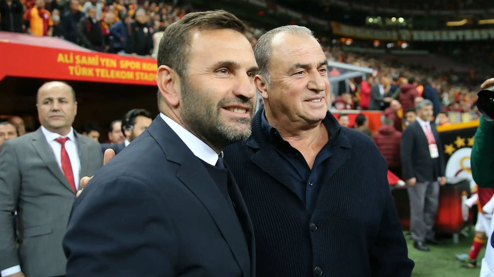
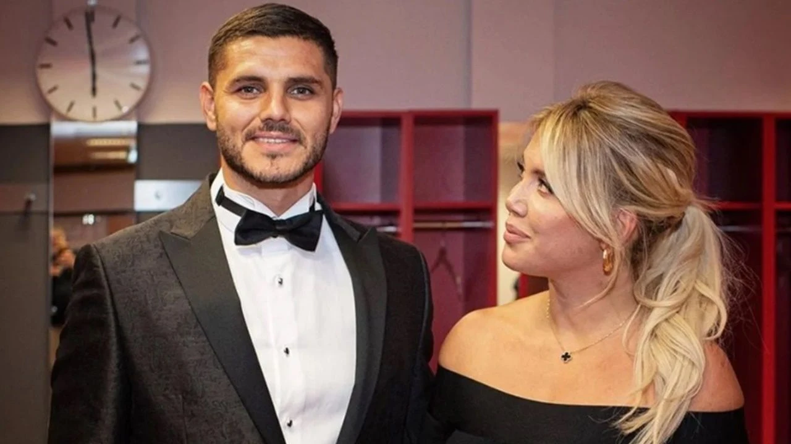

Galatasaray 3-2 Tottenham

Galatasaray's thrilling 3-2 victory over Tottenham in the Champions League was a remarkable display of resilience and determination. The Turkish side showed incredible character, coming from behind to secure all three points in front of a passionate home crowd. Tottenham, who initially took the lead, were caught off guard by Galatasaray's attacking prowess and tactical flexibility. With standout performances from key players, including Victor Osimhen and Dries Mertens, Galatasaray proved they are a formidable force in European football. This victory not only boosts their chances of advancing in the tournament but also cements their reputation as one of the top clubs in Europe.
Okan Buruk Talks Galatasaray's Strategy on TRT Spor
Okan Buruk, the head coach of Galatasaray, gave an insightful interview on TRT Spor yesterday, discussing the team's current performance, strategies, and future plans. In the conversation, Buruk emphasized the importance of maintaining a balanced approach between domestic competitions and international challenges. He highlighted Galatasaray's commitment to improving its playing style and his team's dedication to adapting to the demands of modern football. The coach also reflected on individual player developments, praising the squad's collective effort while stressing the need for continued growth. His thoughts conveyed a clear vision of ambition, resilience, and teamwork, offering a glimpse into the tactical evolution of his team.
Mauro Icardi and Wanda Nara End Their Tumultuous Relationship
Mauro Icardi and Wanda Nara’s recent split has caught the attention of fans and the media alike. After years of a highly publicized and tumultuous relationship, the couple announced their separation, leaving many to speculate about the reasons behind it. While details remain scarce, their separation comes after several ups and downs, both personal and professional, with Nara managing Icardi's career for a period. The breakup has sparked a flurry of rumors, with reports suggesting that the issues were more complex than just personal differences, involving career decisions and media pressure. Both Icardi and Nara have since remained relatively private about the situation, but the end of their relationship marks a significant chapter in the lives of these two high-profile figures.